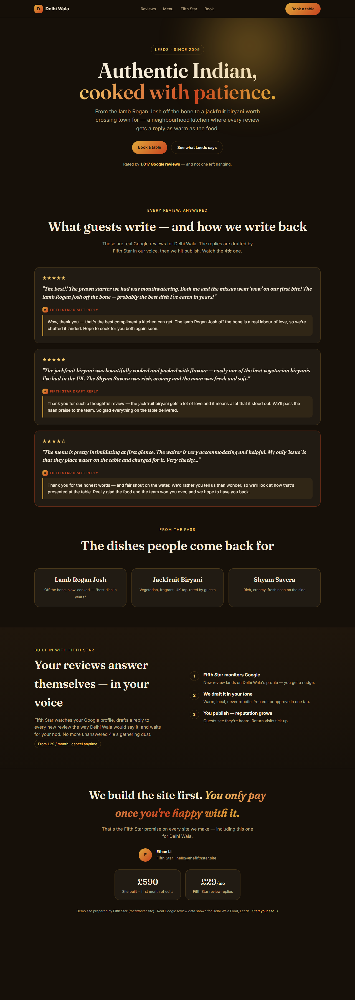
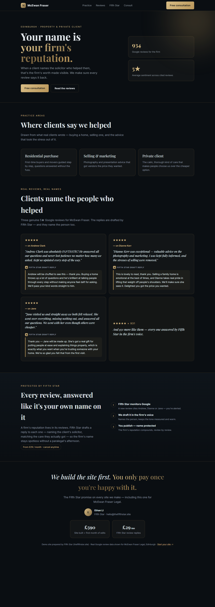

Both are FifthStar–branded demo sites (English, same promise, same pricing). The difference is structural, not just colour: each is grounded in that merchant's real Google review data from our outreach list.


Next: if the directions land, extend the matrix by cuisine (Italian / Japanese / Chinese / Spanish / Mediterranean…) and wire theme / signature into the build engine so each is one click away.